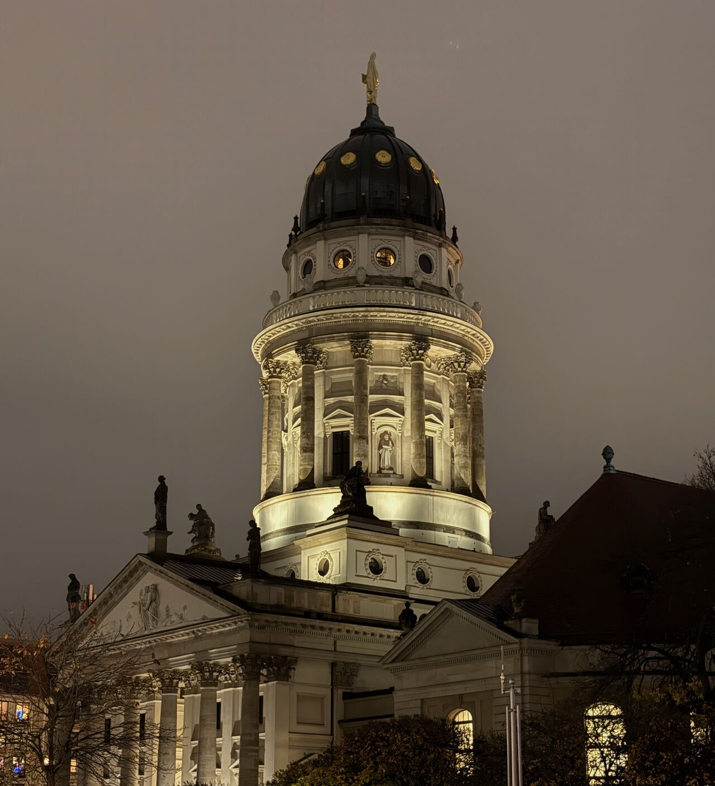
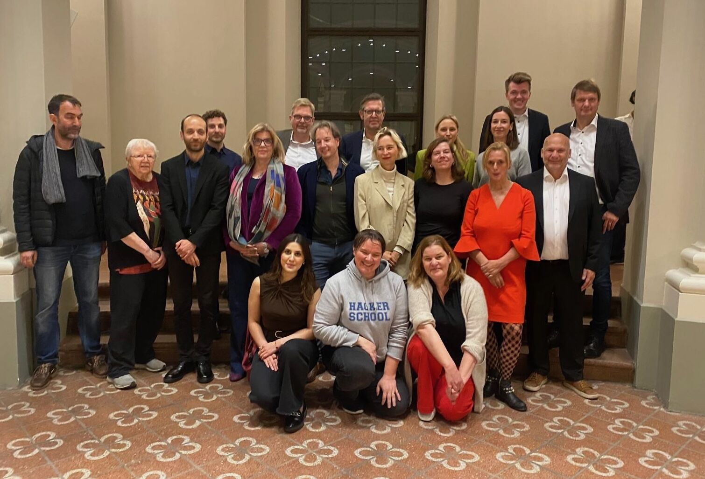
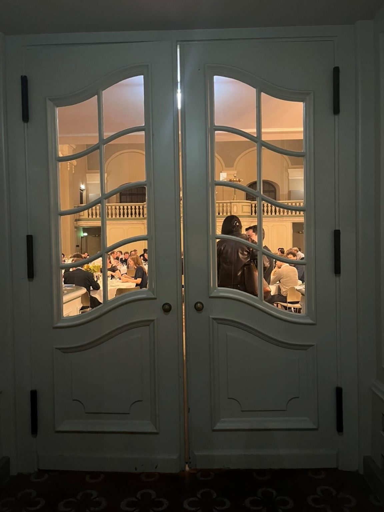
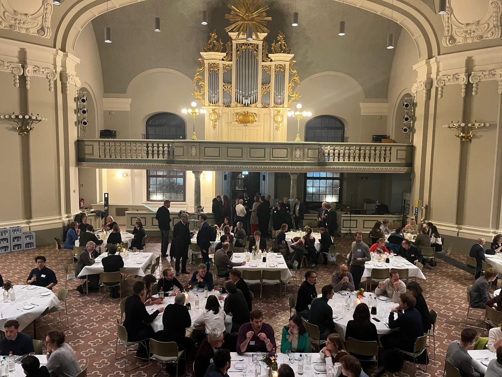
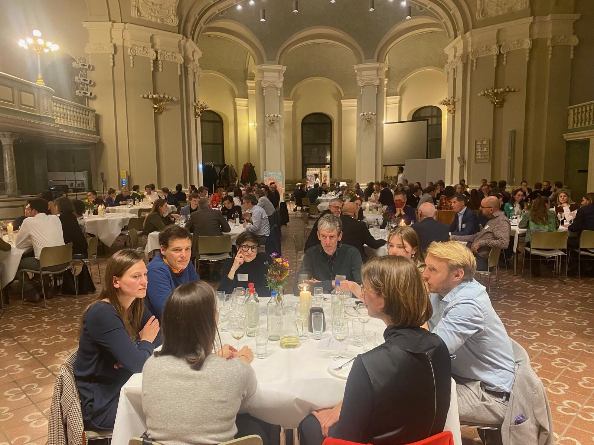

Berliner Salon • Jetzt ist die Zeit
Vom Reden ins Handeln
Viele gut ausgebildete Menschen möchten sich gesellschaftlich engagieren. Der Schritt vom guten Vorsatz zum konkreten Handeln gelingt ihnen aber oft nicht – nicht aus Gleichgültigkeit, sondern weil der Weg fehlt. Diese Brücke wollen wir an diesem Abend beim Berliner Salon bauen.
Mi. 30.09.2026
Französischer Dom
Rotating Dinner
Offizieller Veranstalter: Evangelische Akademie zu Berlin





